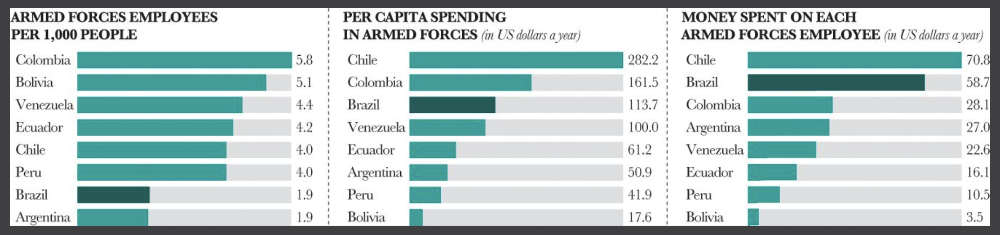

전북대학교 통계학과 최규빈 교수님 강의 정리내용입니다.
https://guebin.github.io/DV2023/
훌륭한 시각화
Edward Tufte
” 최소한의 잉크로 많은 정보를 전달할 수 있다면 그것이 바로 좋은 그래프이다. 작은 지면 내에서 잉크를 최대한 적게 써서 짧은 시간 안에 많은 영감을 주어야 한다. ”
- 어려운 점:
- 센스부족: 센스가 없어서 hue/style을 이용하여 그룹을 구분할 생각을 못함
- 개념부족: tidydata (=tidy dataframe, long form dataframe) 형태로 데이터를 정리할 생각을 못함
- 코딩못함: tidydata로 데이터를 변형하는 코드를 모름
- 해결하는 방법:
- 센스부족: 훌륭한 시각화를 많이 보면 해결할 수 있음.
- 개념부족: tidydata에 대한 개념을 배우면 해결할 수 있음.
- 코딩못함: 코딩공부 열심히 (시각화 코드가 중요한게 아니고, pandas를 엄청 잘해야함)
시각화 예시
남미국가들의 국방력
- 쓸모없는 그래픽
- 아래가 더 우수한 그림이다. 더 정확한 비교가 가능
- 그리고 위의 그림보다 아래의 그림이 더 우수한 시각화이다.
- 브라질의 국방력은 모든 지표에서 1등이다. 1.군인수도 많고(왼쪽그림) 2.예산도 많이 투자하는 것 같다(가운데그림).
- 그런데 인구로 인한 결과인 것 같다(오른쪽그림).

- 사실 지표들을 인구수로 나누고 보니까 1.인구당 군인수도 많지 않고(왼쪽그림) 2.인구당 국방비 지출도 3등 수준이고(가운데 그림) 3.군인당 교육투자비도 높지 않다(오른쪽그림).
- 즉 내실이 없다는 의미
스페인의 실업률
- 명암으로 왜 크기비교를 하는 것인가?
- 비교를 위해서는 bar plot이 더 우수하다.
은행들의 시가 총액
- 회색이 before, 검은색이 after
- 크기 비교는 버블로 하는 것이 아니다.
- 우리 눈은 작은원이 큰원의 절반정도 차지한다고 느껴진다.
- 그렇지만 실제로는 아래와 같음
- 버블차트는 크기를 왜곡시킨다.
분열된 유권자들
- 하지만 아래의 버블차트는 우수하다. (왜? 크기비교 자체가 목적이 아니므로)

- 선거지도는 수치비교에 별로 관심이 없다.
- 대신에 민주당표와 공화당표가 어떤 지역에 몰렸는지 파악하는 것이 중요.
- 따라서 aes중 가장 중요한 \(x, y\)를 모두 지역정보를 표현하기 위해 투자함
좋은 aes 속성들
- 위로 갈수록 좋다.
스티븐 잡스의 시각화
- 크기비교에서 3D plot은 좋지 않음
- 그런데 스티븐 잡스는 아래와 같이 시각화를 했음.
- 잘 몰라서 한 것일까? 고의로 한 것 일까?
- ref: https://paragraft.wordpress.com/2008/06/03/the-chart-junk-of-steve-jobs/
시각화의 정석
- 시간경과에 따른 변화를 보여주고 싶으면 라인플랏, 비교를 하고 싶다면 바플랏, 관계를 알고 싶다면 산점도.